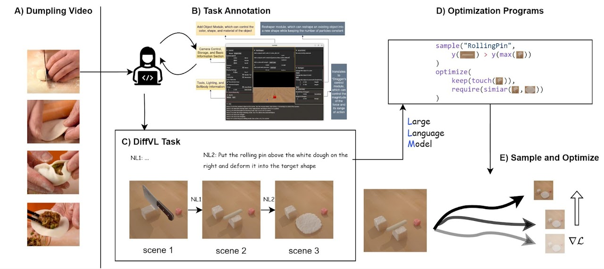
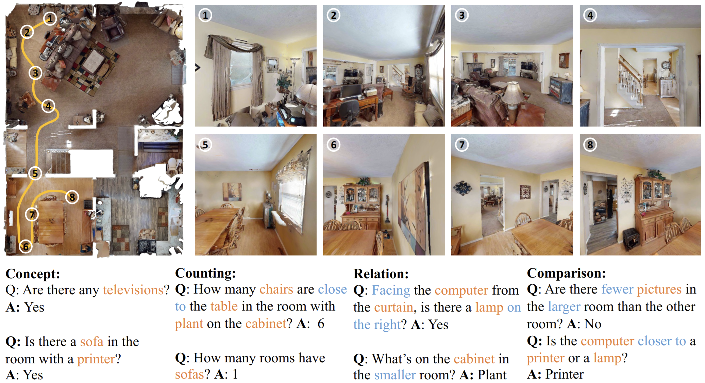
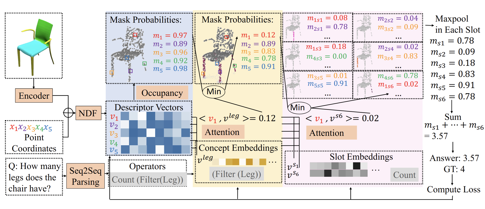

|
Chunru Lin I am Chunru Lin (林春茹), a second-year Ph.D. student in Computer Science at UMass Amherst, advised by Prof. Chuang Gan. I received my bachelor's degree from ACM Honors Class, Shanghai Jiao Tong University. I was fortunate to be a visiting student researcher at CoCoSci Lab in MIT, advised by Prof. Josh Tenenbaum and Chuang Gan during my undergraduate. I also interned at Shanghai Qi Zhi Institute advised by Prof. Tao Du. My research interest lies in Robotics, Computer Vision and Artificial Intelligence. Outside of research, I enjoy watching movies and playing billiards. Email / CV / Google Scholar / Twitter / Github |

|
Professional Services
|
News
|
Publications |
|
UBSoft: A Simulation Platform for Robotic Skill Learning in Unbounded Soft Environments
Chunru Lin, Jugang Fan, Yian Wang, Zeyuan Yang, Zhehuan Chen, Lixing Fang, Tsun-Hsuan Wang, Zhou Xian, Chuang Gan Conference on Robot Learning (CoRL), 2024 Paper |
|
|  |
DiffVL: Scaling Up Soft Body Manipulation using Vision-Language Driven Differentiable Physics
Zhiao Huang, Feng Chen, Yewen Pu, Chunru Lin, Hao Su, Chuang Gan Computer Vision and Pattern Recognition (CVPR), 2023 Project | Paper | Code |
|  |
3D Concept Learning and Reasoning from Multi-View Images
Yining Hong, Chunru Lin, Yilun Du, Zhenfang Chen, Joshua B. Tenenbaum, Chuang Gan Computer Vision and Pattern Recognition (CVPR), 2023 Project | Paper | Code |
|  |
3D Concept Grounding on Neural Fields
Yining Hong, Yilun Du, Chunru Lin, Joshua B. Tenenbaum, Chuang Gan Conference on Neural Information Processing Systems (NeurIPS), 2022 Paper | Code |